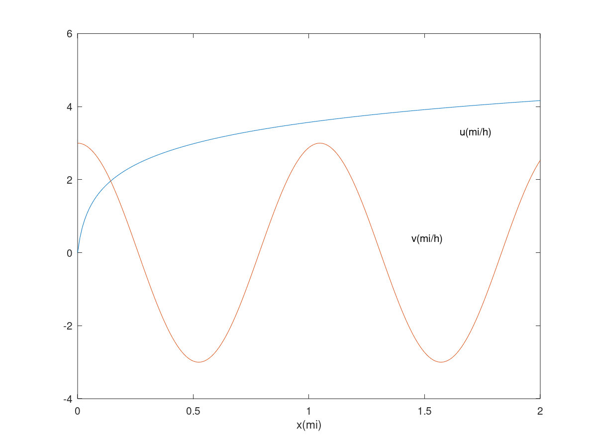

Authored by: Andres Choque Authored on: 9/11/2020
close all clear clc %{ Suppose that x = 2 and y = 5. Use MATLAB to compute the following: a. yx^3/x - y b. 3x/2y c. (3/2)xy d. x^5/(x^5 - 1). %} % psuedocode % initialize variables % apply the variables into the following expressions % display the results % initialize variables x = 2; y = 5; % apply the variables into the following expressions a = (y*x^3)/(x - y); b = (3*x)/(2*y); c = (3/2)*x*y; d = (x^5)/((x^5) - 1); % display the results disp('For problem 2 the answers are the following: '), a, b, c, d disp('')
For problem 2 the answers are the following: a = -13.333 b = 0.60000 c = 15 d = 1.0323
%{ Suppose that x = -7 - 5i and y = 4 + 3i. Use MATLAB to compute a. x+y b. xy c. x/y %} % psuedocode % initialize variables % apply the variables into the following expressions % display the results % initialize variables x = -7 - 5i; y = 4 +3i; % apply the variables into the following expressions a = x + y; b = x*y; c = x/y; % display the results disp('For problem 12 the answers are the following: '), a, b, c disp('')
For problem 12 the answers are the following: a = -3 - 2i b = -13 - 41i c = -1.720000 + 0.040000i
%{ The ideal gas law relates the pressure P, volume V, absolute temperature T, and the amount of gas n. the law is P = N R T / V where R is the gas constant. An engineer must design a large natural gas storage tank to be expandable to main- tain the pressure constant at 2.2 atm. In December when the temperature is 4*F (-15*C), the volume of gas in the tank is 28,500 ft^3. What will the volume of the same quantity of gas be in July when the temperature is 88*F (31*C)? (Hint: Use the fact that n, R, and P are constant in this problem. Note also that K = *C + 273.2) %} % psuedocode % initialize variables % apply the variables into the following espression solving for temperature V2 % display the results % initialize variables T1 = -15 + 273.2; T2 = 31 + 273.2; V1 = 28500; % apply the variables into the following espression solving for volume (V2) V2 = V1*(T2/T1); % display the results disp('For problem 16 the volume of gas in ft during July is: '), V2 disp('')
For problem 16 the volume of gas in ft during July is: V2 = 33577.45933
%{ Use MATLAB to find the roots of 13x^3 + 182x^2 - 184x +2503 = 0. %} % psuedocode % initialize variables % apply the variables into the following espression solving for temperature V2 % display the results % initialize variables w = [13, 182, - 184, 2503]; % apply the variable to the roots expression roots(w); % display the results disp('For problem 26 the roots for the function are: '), roots(w) disp('')
For problem 26 the roots for the function are:
ans =
-15.68500 + 0.00000i
0.84250 + 3.40081i
0.84250 - 3.40081i
%{ Use MATLAB to plot the function u = 2 log(10)(60x+1) and v = 3 cos(6x) over the interval 0 <= x <= 2. Properly label the plot and each curve. The variables u and v represent speed in miles per hour; the variable x represents distance in miles %} % psuedocode % initialize variables % plot each curve and label the plot % display the results % initialize variables x = 0:0.01:2; u = 2*log10(60*x + 1); v = 3*cos(6*x); % plot each curve and label the plot plot(x,u,x,v), xlabel('x(mi)'), gtext('u(mi/h)'), gtext('v(mi/h)')